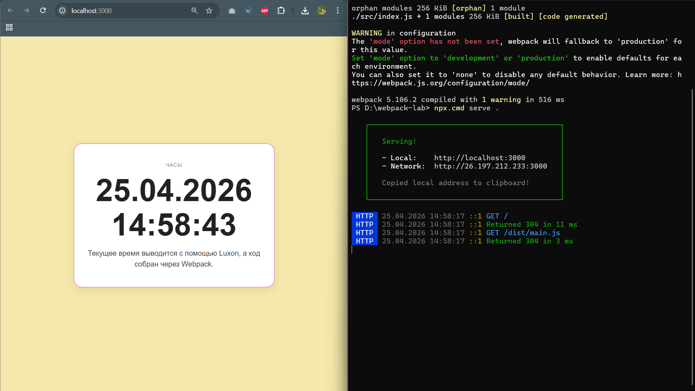
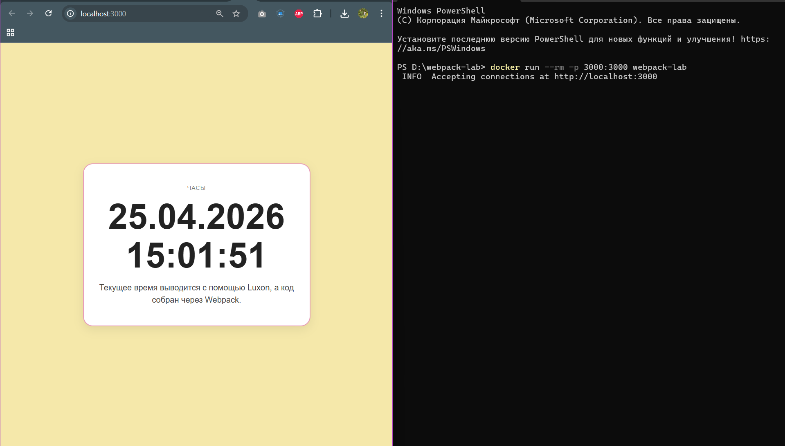

Сборка проекта с помощью Webpack и запуск через Docker
Agalarova Aisel
Используемые инструменты
В работе использовались:
Node.js- среда выполнения JavaScriptnpm- менеджер пакетовWebpack- сборщик проектаwebpack-cli- интерфейс командной строки для Webpackserve- локальный сервер для запуска статической страницыluxon- библиотека для работы с датой и временемBootstrap CDN- подключение Bootstrap через ссылку в HTMLDocker- контейнеризация приложения- образ
node:24-alpine- облегчённый Node.js-образ для Docker
Проверка Node.js и npm
Сначала я проверила установленную версию Node.js:
node -v
В результате была получена версия:
v24.12.0
После этого я попробовала проверить версию npm стандартной командой:
npm -v
PowerShell заблокировал выполнение файла npm.ps1, так как в системе было отключено выполнение сценариев:
npm : Невозможно загрузить файл C:\Program Files\nodejs\npm.ps1, так как выполнение сценариев отключено в этой системе.
Для обхода этой проблемы я использовала команду npm.cmd, которая запускает npm через командный файл, а не через PowerShell-скрипт:
npm.cmd -v
Команда выполнилась успешно:
11.6.2
Дальше в работе я использовала именно npm.cmd и npx.cmd, чтобы не было ошибки.
Создание проекта
Я инициализировала проект командой:
npm.cmd init -y
После выполнения команды автоматически был создан файл package.json:
{
"name": "webpack-lab",
"version": "1.0.0",
"description": "",
"main": "index.js",
"scripts": {
"test": "echo \"Error: no test specified\" && exit 1"
},
"keywords": [],
"author": "",
"license": "ISC",
"type": "commonjs",
"dependencies": {
"luxon": "^3.7.2"
},
"devDependencies": {}
}
В проекте была установлена зависимость luxon, поэтому в папке присутствовали node_modules, package-lock.json и запись о luxon в dependencies.
Установка Webpack
Для сборки проекта были установлены developer-зависимости:
npm.cmd i -D webpack webpack-cli serve
Команда завершилась успешно:
added 182 packages, and audited 184 packages in 9s
42 packages are looking for funding
run `npm fund` for details
found 0 vulnerabilities
После этого я проверила содержимое файла package.json:
type package.json
В файле появились зависимости:
{
"name": "webpack-lab",
"version": "1.0.0",
"description": "",
"main": "index.js",
"scripts": {
"test": "echo \"Error: no test specified\" && exit 1"
},
"keywords": [],
"author": "",
"license": "ISC",
"type": "commonjs",
"dependencies": {
"luxon": "^3.7.2"
},
"devDependencies": {
"serve": "^14.2.6",
"webpack": "^5.106.2",
"webpack-cli": "^7.0.2"
}
}
Здесь luxon находится в разделе dependencies, потому что эта библиотека используется в коде приложения. А webpack, webpack-cli и serve находятся в разделе devDependencies, потому что они нужны для разработки, сборки и локального запуска проекта.
Создание исходного файла src/index.js
Для исходного JavaScript-кода была создана папка src:
md src
После этого я создала файл index.js:
notepad src\index.js
В файл был добавлен код:
import { DateTime } from 'luxon';
const hh = document.getElementById('hh');
setInterval(() => {
hh.textContent = DateTime
.local()
.setLocale('ru')
.toFormat('dd.LL.y HH:mm:ss');
}, 1000);
В первой строке импортируется объект DateTime из библиотеки luxon. Затем через document.getElementById('hh') находится HTML-элемент, в который будет выводиться дата и время. Функция setInterval обновляет содержимое этого элемента каждую секунду. Метод DateTime.local() получает текущие локальные дату и время. Метод setLocale('ru') задаёт русскую локаль. Метод toFormat('dd.LL.y HH:mm:ss') форматирует дату и время в виде:
день.месяц.год часы:минуты:секунды
Сборка Webpack
Для сборки проекта я выполнила команду:
npx.cmd webpack
Сначала сборка завершилась с ошибкой:
assets by status 378 bytes [cached] 1 asset
./src/index.js 213 bytes [built] [code generated] [1 error]
WARNING in configuration
The 'mode' option has not been set, webpack will fallback to 'production' for this value.
ERROR in ./src/index.js 1:0
Module parse failed: 'import' and 'export' may appear only with 'sourceType: module' (1:0)
> import { DateTime } from 'luxon';
Ошибка была связана с тем, что в package.json стояло значение:
"type": "commonjs"
При этом в файле src/index.js использовался синтаксис ES-модулей:
import { DateTime } from 'luxon';
Из-за этого Webpack не смог корректно обработать импорт.
Для исправления ошибки я открыла файл package.json:
notepad package.json
И заменила строку:
"type": "commonjs"
на:
"type": "module"
После исправления я снова выполнила сборку:
npx.cmd webpack
Сборка прошла успешно:
asset main.js 69 KiB [emitted] [minimized] (name: main)
orphan modules 256 KiB [orphan] 1 module
./src/index.js + 1 modules 256 KiB [built] [code generated]
WARNING in configuration
The 'mode' option has not been set, webpack will fallback to 'production' for this value.
webpack 5.106.2 compiled with 1 warning in 505 ms
В папке появилась директория dist:
Каталог: D:\webpack-lab
Mode LastWriteTime Length Name
---- ------------- ------ ----
d----- 25.04.2026 14:11 dist
d----- 25.04.2026 14:09 node_modules
d----- 25.04.2026 14:10 src
-a---- 25.04.2026 14:09 82356 package-lock.json
-a---- 25.04.2026 14:11 399 package.json
Содержимое папки dist:
Каталог: D:\webpack-lab\dist
Mode LastWriteTime Length Name
---- ------------- ------ ----
-a---- 25.04.2026 14:11 70627 main.js
Файл main.js является итоговым bundle-файлом. В него Webpack собрал мой файл src/index.js и подключённую библиотеку luxon.
Создание страницы index.html
После сборки я создала страницу index.html:
notepad index.html
В неё был добавлен следующий код:
<!doctype html>
<html lang="ru">
<head>
<meta charset="UTF-8">
<meta name="viewport" content="width=device-width, initial-scale=1">
<title>Webpack Lab</title>
<link
href="https://cdn.jsdelivr.net/npm/bootstrap@5.3.3/dist/css/bootstrap.min.css" rel="stylesheet">
<style>
body {
background: #f5e8aa;
font-family: Arial, sans-serif;
}
.page {
min-height: 100vh;
}
.time-box {
background: #ffffff;
border: 2px solid #e89eb8;
border-radius: 24px;
padding: 48px 32px;
box-shadow: 0 8px 24px rgba(0, 0, 0, 0.08);
text-align: center;
}
.time-label {
margin-bottom: 12px;
font-size: 14px;
letter-spacing: 0.08em;
text-transform: uppercase;
color: #777;
}
.time-value {
margin-bottom: 16px;
font-size: clamp(48px, 9vw, 96px);
font-weight: 700;
line-height: 1.1;
color: #222;
}
.time-text {
margin: 0;
font-size: 20px;
color: #444;
}
</style>
</head>
<body>
<main class="page container d-flex align-items-center justify-content-center py-5">
<section class="row justify-content-center w-100">
<div class="col-12 col-md-10 col-lg-8">
<div class="time-box">
<p class="time-label">Часы</p>
<h1 class="time-value" id="hh">
Загрузка...
</h1>
<p class="time-text">
Текущее время выводится с помощью Luxon, а код собран через Webpack.
</p>
</div>
</div>
</section>
</main>
<script src="./dist/main.js"></script>
</body>
</html>
На странице есть элемент:
<h1 class="time-value" id="hh">
Загрузка...
</h1>
Именно в этот заголовок JavaScript вставляет текущее время. Связь между HTML и JavaScript происходит через идентификатор:
id="hh"
А в файле src/index.js этот элемент находится строкой:
const hh = document.getElementById('hh');
Собранный Webpack-файл подключается в конце страницы:
<script src="./dist/main.js"></script>
Запуск локального сервера
Для проверки страницы я запустила локальный сервер:
npx.cmd serve .
После запуска сервер вывел адреса, по которым доступна страница:
┌────────────────────────────────────────────┐
│ │
│ Serving! │
│ │
│ - Local: http://localhost:3000 │
│ - Network: http://26.197.212.233:3000 │
│ │
│ Copied local address to clipboard! │
│ │
└────────────────────────────────────────────┘

Создание Dockerfile
Для выполнения этого же проекта внутри Docker-контейнера я создала файл Dockerfile:
notepad Dockerfile
Содержимое файла:
FROM node:24-alpine
WORKDIR /app
COPY package*.json ./
RUN npm install
COPY . .
RUN npx webpack
EXPOSE 3000
CMD ["npx", "serve", ".", "-l", "3000"]
Первая строка задаёт базовый образ:
FROM node:24-alpine
Команда:
WORKDIR /app
создаёт рабочую папку /app внутри контейнера. Все дальнейшие команды будут выполняться относительно этой папки.
Команда:
COPY package*.json ./
копирует в контейнер файлы package.json и package-lock.json. Это нужно сделать до копирования всего проекта, чтобы Docker мог отдельно установить зависимости.
Команда:
RUN npm install
устанавливает зависимости внутри контейнера.
Команда:
COPY . .
копирует остальные файлы проекта в контейнер.
Команда:
RUN npx webpack
запускает сборку проекта внутри контейнера. В результате внутри контейнера создаётся папка dist и файл dist/main.js.
Команда:
EXPOSE 3000
указывает, что приложение внутри контейнера работает на порту 3000.
Последняя строка:
CMD ["npx", "serve", ".", "-l", "3000"]
задаёт команду, которая будет выполняться при запуске контейнера. Она запускает статический сервер serve на порту 3000.
Сборка Docker-образа
Я выполнила сборку:
docker build -t webpack-lab .
Сборка завершилась успешно:
[+] Building 14.1s (11/11) FINISHED docker:desktop-linux
=> [internal] load build definition from Dockerfile 0.0s
=> => transferring dockerfile: 193B 0.0s
=> [internal] load metadata for docker.io/library/node:24-alpine 2.0s
=> [internal] load .dockerignore 0.0s
=> [1/6] FROM docker.io/library/node:24-alpine 6.5s
=> [2/6] WORKDIR /app 0.1s
=> [3/6] COPY package*.json ./ 0.0s
=> [4/6] RUN npm install 2.1s
=> [5/6] COPY . . 0.0s
=> [6/6] RUN npx webpack 1.7s
=> exporting to image 1.5s
=> => naming to docker.io/library/webpack-lab:latest 0.0s
=> => unpacking to docker.io/library/webpack-lab:latest 0.5s
Запуск приложения через Docker
После сборки образа я запустила контейнер командой:
docker run --rm -p 3000:3000 webpack-lab
После запуска контейнера сервер начал принимать подключения:
INFO Accepting connections at http://localhost:3000

Последовательность команд для запуска проекта локально
Для локального запуска проекта используется следующая последовательность:
cd D:\webpack-lab
npm.cmd install
npx.cmd webpack
npx.cmd serve .
После запуска сервера приложение открывается по адресу:
http://localhost:3000
Последовательность команд для запуска через Docker
Для запуска проекта через Docker используется:
cd D:\webpack-lab
docker build -t webpack-lab .
docker run --rm -p 3000:3000 webpack-lab
После запуска контейнера приложение также открывается по адресу:
http://localhost:3000